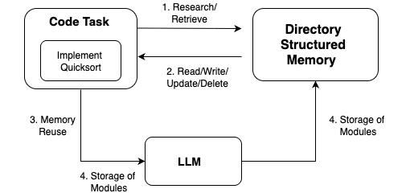
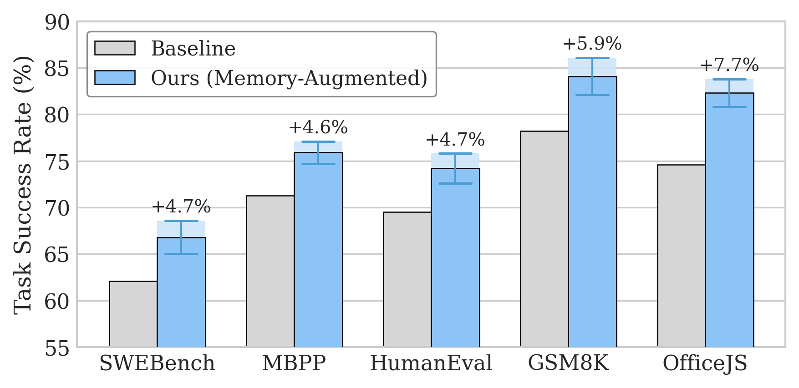

Every time you ask an AI agent to solve a coding problem, it starts from absolute zero. It doesn't remember that it solved a nearly identical problem yesterday. It doesn't know it already figured out a helper function that would make this task trivial. It just... starts over.
This is the state of the art in 2026. Agents that can write entire applications, fix real GitHub issues, pass coding interviews, but can't remember what they learned five minutes ago.
We built a system called Model Memory Madness (MMM) that gives LLMs persistent, structured, executable memory. Not conversation history. Not a vector store. A real code repository that the model reads from, writes to, and organizes over time. The results were not subtle.
The Amnesia Problem Is Worse Than You Think
Here is what actually happens when an LLM agent solves a sequence of related tasks:
- Task 1: Agent spends 12 steps figuring out how to parse a custom file format. Solves it.
- Task 2: Same file format. Agent starts from scratch. Takes 11 steps to rediscover the same parsing logic. Slight variation.
- Task 3: Same format again. 10 steps. Same trial and error. Same dead ends.
A human developer would have written a utility function after Task 1 and reused it. The model can't, because it has no persistent storage. Every intermediate discovery, every helper function, every bug fix pattern is thrown away the moment the task ends.
This isn't a minor inefficiency. It's a structural limitation that makes agents slow, expensive, and unreliable, especially in domains where the model doesn't have strong prior knowledge.
The compounding cost: In agentic coding systems, models often need 4-8 feedback loops per task. Without memory, each loop across each task reinvents the same intermediate solutions. The wasted compute adds up fast.
What We Built: Memory as a Code Repository
MMM gives the agent a persistent memory structured as a code module with nested directories. Think of it as the model's personal utility library that grows as it works.
The agent interacts with memory through six operations:
| Operation | What it does |
|---|---|
Read(q) | Search memory for utilities relevant to the current task |
Write(p, c) | Save a new utility (function, pattern, snippet) to a path |
Update | Refine an existing utility based on new information |
Delete | Remove outdated or redundant entries |
List | Browse the directory structure to find relevant modules |
Exec(c) | Run code in a sandbox to validate before storing |
This isn't a retrieval-augmented generation setup. The model doesn't just read from memory. It actively curates it. After solving a task, it decides what's worth saving, how to organize it, whether existing utilities need updating. The memory is alive.
What the memory actually looks like
regex_helpers.py
encoding_converters.py
priority_queue.py
trie_implementation.py
mock_generators.py
edge_case_templates.py
swift_idioms.py
haskell_monads.py
Each module contains executable code with metadata: docstrings, dependency info, and an embedding for retrieval. The directory hierarchy groups related utilities by semantic concept. The model builds this structure organically as it works through tasks.
Architecture: The Memory Loop
Every task follows the same loop: read from memory, solve the task, write back to memory.

The key insight: memory doesn't just grow. We tracked memory evolution across hundreds of tasks and found something interesting. Size spikes early and then stabilizes, while nesting depth and modification count keep increasing. The model learns to refine and reorganize rather than just pile things on.
The Numbers
We evaluated MMM on five benchmarks covering software engineering, code synthesis, mathematical reasoning, low-resource programming languages, and Office automation.
languages (vs baseline)
steps needed
(vs 71.2% baseline)
generated from memory
Overall performance: MMM vs. existing memory approaches
| Method | SWEBench | HumanEval | GSM8K | OfficeJS |
|---|---|---|---|---|
| Vector Store | 64.3 | 71.2 | 69.8 | 67.5 |
| Flat Memory | 69.1 | 73.8 | 71.5 | 70.2 |
| A-Mem | 67.4 | 72.9 | 70.4 | 68.1 |
| MMM (Ours) | 76.8 | 82.3 | 78.6 | 78.1 |
Consistent improvement across every benchmark. The gap is widest on OfficeJS (+10.6 over vector store) and most modest on SWEBench (+7.7), which makes sense: OfficeJS requires discovering and reusing domain-specific patterns, while SWEBench tasks have lower inter-task overlap.

Where Memory Matters Most: Low-Resource Languages
This is where the results get really interesting. For well-resourced languages like Python and JavaScript, MMM adds a solid 4-5%. Useful, but not transformative. For low-resource languages? The gains are massive.
| Language | Baseline | MMM | Improvement |
|---|---|---|---|
| Python | 78.1 | 82.4 | +4.3 |
| JavaScript | 72.9 | 77.6 | +4.7 |
| Swift | 55.4 | 70.1 | +14.7 |
| Rust | 49.6 | 65.2 | +15.6 |
| Kotlin | 52.3 | 67.9 | +15.6 |
Why this happens: In low-resource settings, the model has less built-in knowledge. Memory compensates by turning each discovery into a reusable asset. The first time the model figures out Rust's borrow checker patterns or Swift's protocol conformance, it saves that knowledge. Every subsequent task gets the benefit. The less the model knows upfront, the more memory helps.
Not Just More Accurate. Faster.
Memory doesn't just improve outcomes. It reduces the work needed to get there.
| Benchmark | Baseline Steps | MMM Steps | Reduction |
|---|---|---|---|
| SWEBench | 182 | 121 | 33.5% |
| HumanEval | 131 | 87 | 33.6% |
| GSM8K | 118 | 92 | 22.0% |
| OfficeJS | 164 | 102 | 37.8% |
22-38% fewer reasoning steps. That's fewer inference calls, less compute, lower latency, lower cost. The agent skips the trial-and-error because it already has the answer in memory.
The Surprising Part: Memory Transfers Across Models
We tested something that sounds like it shouldn't work. Take the memory built by GPT-5, and hand it to Phi-4. Does it help?
Yes.
| Inference Model | GPT-5 Memory | Opus 4.1 Memory | LLaMA-2 Memory | Phi-4 Memory |
|---|---|---|---|---|
| GPT-5 | +5.3 | +4.8 | +3.9 | +4.1 |
| LLaMA-2 | +3.7 | +3.2 | +4.2 | +3.0 |
| Phi-4 | +4.1 | +3.9 | +3.3 | +4.5 |
Every cell is positive. Memory built by any model helps every other model. Models do best with their own memory (diagonal), but cross-model transfer consistently works. Because the memory is stored as executable code with clear documentation, it's not tied to one model's internal representations. It's just... good code.
What this means: Memory is a portable asset. You can build it once with your best model and deploy it with your cheapest model. Knowledge bootstrapping without fine-tuning.
Teaching the Model to Use Memory Better
Having memory is one thing. Using it well is another. We added a reinforcement learning signal that encourages three behaviors: (1) solve the task, (2) reuse stored modules, (3) keep memory compact.
The reward is simple:
# Reward balances three objectives R(task) = alpha * R_task # did you solve it? + beta * R_mem_use # did you use stored modules? - lambda * R_size # is memory bloated?
The weight tuning matters. Overweight compactness and the model games it by storing one useless line and reading it every turn. Overweight reuse and the model forces irrelevant retrievals. The balance encourages natural memory behavior.
| Benchmark | Without RL | With RL | Latency Change |
|---|---|---|---|
| SWEBench | 67.8 | 72.9 | -2.8s |
| LRPL | 64.2 | 69.4 | -2.1s |
| HumanEval | 79.5 | 83.8 | -1.8s |
| GSM8K | 82.3 | 85.6 | -0.7s |
| OfficeJS | 74.5 | 78.9 | -1.9s |
RL improves both accuracy and latency. The model learns to access memory more selectively, reducing unnecessary retrievals and consolidating overlapping utilities.
Memory as Training Data
One more thing. The accumulated memory isn't just useful at inference time. We generated synthetic training data from it: take each stored utility, create task-solution pairs around it, filter for quality, and fine-tune the base model.
Across all configurations, this produced an average of 5.6K training samples. Fine-tuning on this synthetic data improved base model accuracy by +3.5% on average. The model learns from its own discoveries, even without the memory being present at test time.
The full picture: Memory helps at inference (reuse utilities), at training (synthetic data), and across models (portable transfer). Three different ways to extract value from the same accumulated knowledge.
Why This Matters Now
The industry is building increasingly complex agent systems. Multi-step workflows, cross-application orchestration, long-running tasks. All of these break down when the agent can't remember what it did.
Conversation history and RAG are partial solutions. They let the model look up facts, but they don't let it build and refine reusable abstractions. A vector store can tell you "we saw this error before." Executable memory can give you the debugged fix as a callable function.
The difference between those two things is the difference between an agent that stumbles through the same problems repeatedly and one that compounds its knowledge over time.
We open-sourced the framework and the benchmark suite. If you're building agent systems that need to get smarter over time rather than reset every turn, this is the missing piece.